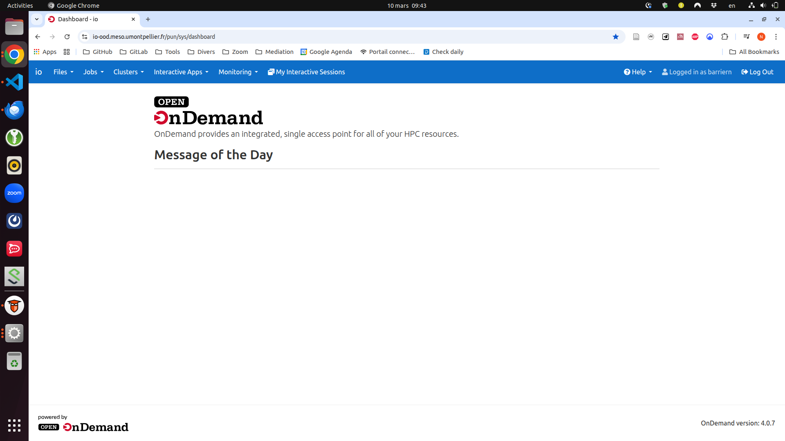
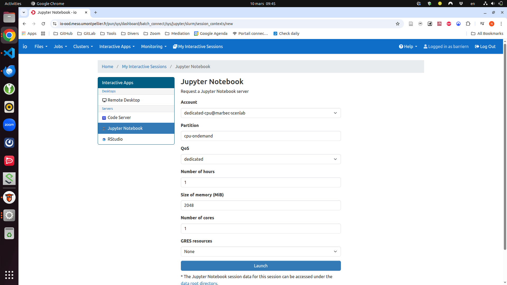

Documentation ISDM-MESO
Bienvenue dans la documentation du cluster ISDM-MESO. Ce document fournit des informations concernant l’utilisation du cluster ISDM-MESO au sein de MARBEC
Caractéristiques
Au sein d’une convention signée entre MARBEC et l’ISDM-MESO, le personnel MARBEC a accès, de manière exclusive, à:
- 6 noeuds de 28 coeurs
- 100 To de stockage
Inscription
Pour obtenir un compte sur le calculateur ISDM-MESO, il faut:
- remplir la charte du DEN (version fr, version en) signée aux administrateurs du DEN
- remplir et signer la charte ISDM-MESO et l’envoyer à Nicolas Barrier
Support
Le support de ISDM-MESO est accessible ici: https://tickets.meso.umontpellier.fr/. La connection se fait avec les identifiants fournis par ISDM-MESO lors de la demande d’ouverture de compte.
Documentation
La documentation complète du cluster est accessible ici: https://docs.meso.umontpellier.fr/fr/home
Par ailleurs, une documentation, fournie par les membres de l’UMR AMAP, est aussi disponible ici: https://site.amaplab.fr/polis/dev
Ci-dessous, un résumé de la documentation adapté aux usages de MARBEC est proposé.
Connexion
Pour se connecter au cluster, ouvrir un Terminal ou une application type MobaXTerm et taper:
ssh -X barriern@io-login.meso.umontpellier.fren remplaçant barriern par votre login.
Premiere utilisation
Lors de votre première connexion, ouvrir le fichier .bashrc (en utilisant n’importe quel éditeur de texte, comme nano, vi ou gedit) et y ajouter la ligne suivante:
export MODULEPATH=/home/barriern/work_marbec/marbec_module/modulefiles:$MODULEPATHCeci vous permettra d’accèder à des modules supplémentaires compilés par les membres du DEN
Gestion des espaces
Sur ISDM-MESO, les dossiers sont organisés de la manière suivante (cf. documentation)
- le dossier
$HOME(180Go), dossier personnel qui contient les code source, scripts, petits fichiers de conf/résultats, logiciels perso (conda envs…). - le dossier
/scratch/users/LOGIN, qui est un espace de travail personnel temporaire pour les données des jobs en cours. Il permet des I/O intensifs, gros fichiers temporaires/résultats intermédiaires (remplacerLOGINpar votre login) - les dossiers
/scratch/projects/PROJET, qui sont des espaces de travail partagés temporaire pour les données des jobs en cours. Il permet des I/O intensifs, gros fichiers temporaires/résultats intermédiaires (remplacerPROJETpar un nom de projet auquel vous êtes associé) - les dossiers
/storage/simple/projects/qui sont des espaces de stockage partagés pour des données communes à conserver longtemps (sorties de modeles, forcages, etc.)
Les données des espaces temporaires (scratch) sont supprimés tous les 2 mois. Il ne faut pas stocker de données dans ces espaces
Modules
La gestion des modules sur ISDM-MESO est un peu archaique.
Soumission de jobs
La soumission de jobs est gérée par l’ordonnanceur SLURM.
Job non interactif
La soumission d’un job non interactif se fait via l’écriture d’un fichier de soumission de job (format .slurm), de cette forme là:
##!/bin/bash
#SBATCH --job-name=orca2_fishing
#SBATCH --time=160:00:00
#SBATCH --ntasks=168
#SBATCH --cpus-per-task=1
#SBATCH --mem=128G
#SBATCH --partition cpu-dedicated
#SBATCH --account=dedicated-cpu@marbec-scenlab
#SBATCH --qos=dedicated
export MODULEPATH=/home/barriern/work_marbec/marbec_module/modulefiles:$MODULEPATH
module purge
module load io-local
module load openmpi/psm2/gcc75/3.1.6
module load netcdf
cd /scratch/users/barriern/
srun program.exe >& compute.log- Les lignes commencant par
#SBATCHsont les reglages du job (et non des commentaires!). La description des parametres est fournie Table 1. - Ensuite, les modules utilisés par le job sont chargés
- Puis on se deplace un des espaces de travail temporaires (
/scratch) - Et enfin on lance le job parallèle avec la commande
srun.
Un job soumis ne pourra écrire que dans un espace /scratch. Si le job est execute dans un autre espace, alors les fichiers de sortie ne seront pas ecrits
| Parametre | Description |
|---|---|
--job-name |
Nom du job |
--time |
Walltime demande pour le job |
--ntasks |
Nombre de processus demandés |
--cpus-per-task |
Nombre de coeurs par tâche |
--mem |
Mémoire demandé |
--partition |
Partition pour le calcul |
--account |
Compte pour le calcul |
--qos |
QOS utilise |
Les parametres partition, account et qos ne doivent pas etre changes pour beneficier de l’utilisation des ressources allouees a MARBEC
Job interactif
Pour soumettre un job interactif, il faut utiliser la commande salloc:
salloc --partition cpu-dedicated --account=dedicated-cpu@marbec-scenlab --qos=dedicatedIl est aussi possible de spécifier d’autres arguments (--mem, --ntasks, etc.)
Notebooks
Pour lancer des modes de calcul interactifs de type Jupyter ou RStudio Server, il faut se connecter au lien suivant: https://io-ood.meso.umontpellier.fr/

Il faut ensuite cliquer sur Interactive Apps et choisir l’application voulue. Ensuite, il suffit de renseigner les bonnes informations concernant les QOS, comme indiqué sur la Figure 2
